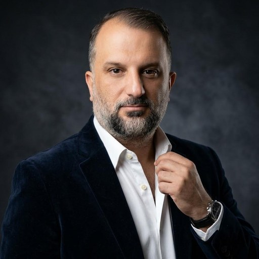

ÜSTAD KENAN KUZUCU
PANEL SAHİBİ · GAZİANTEP
ÜSTAD
MONİTÖR
BETA
HARİTA
HABER
PİYASA
DEPREM
YANGIN
ISS
FIRLATMA
UYDULAR
UZAY
AFET
DENİZ
HAVA
SAĞLIK
UYARILAR
SİBER TEHDİT
ALARM
AYARLAR
BÖLGEM
ZEKÂ
GÜVENLİK
DIŞARI
KAYNAKLAR
DİĞER
LIVE
RENK
MONİTÖR
HACKER
İSTİHBARAT
ALARM
SİBER
AMBER
MOR
MATBAA
TERMİNAL
MATRIX
NEON
ÇÖL
ORMAN
AÇIK
KAĞIT
BUZ
LAVANTA
ALTIN
GECE
☔ YAĞMUR
ÜSTAD DÜNYA MONİTÖRÜ
CANLI KÜRESEL DURUM FARKINDALIĞI · v5.5
▮
DEPREM · AFET · UYDU · UÇAK · GEMİ · AURORA · HAVA · VOLKAN · ISS · KABLO · HABER